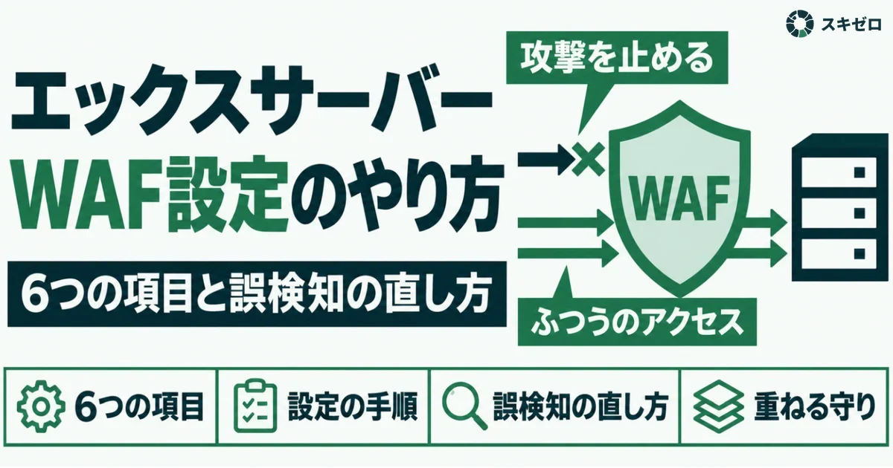
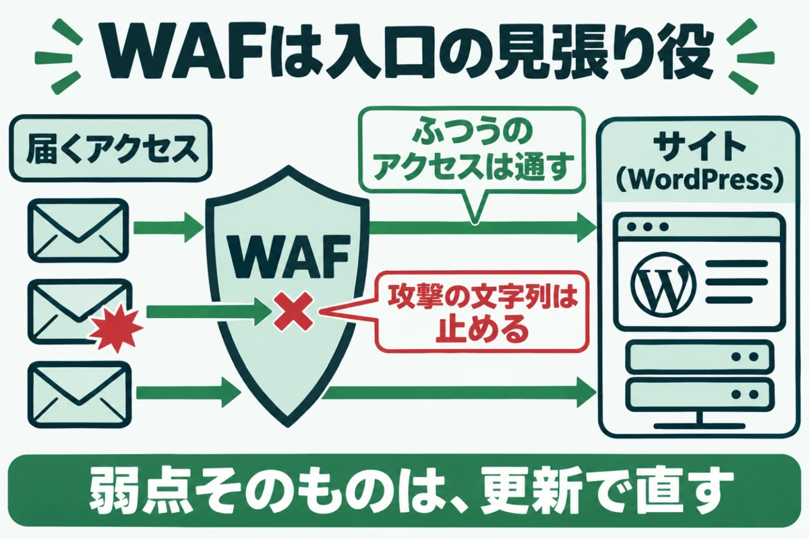
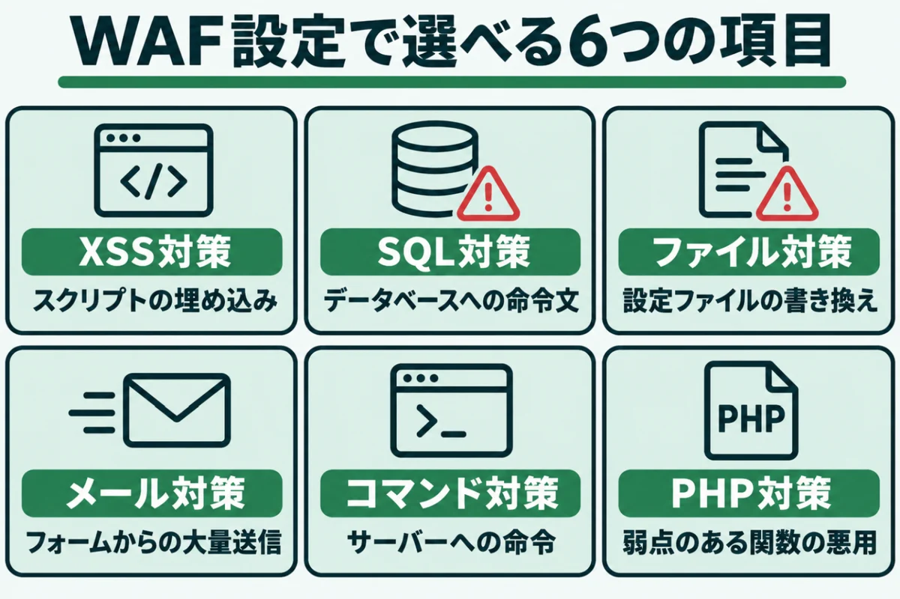
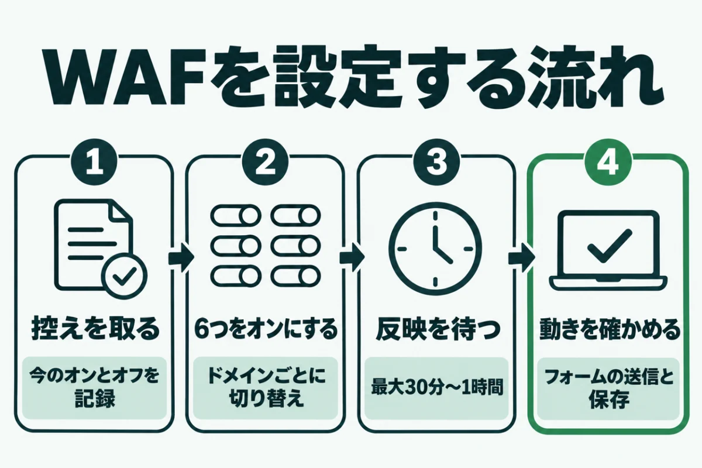
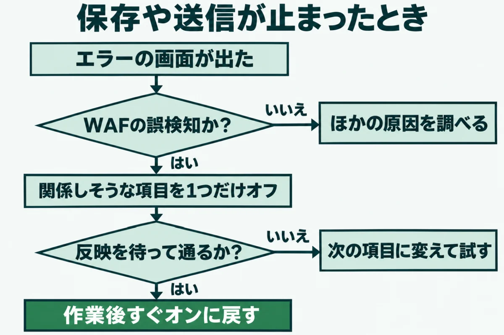
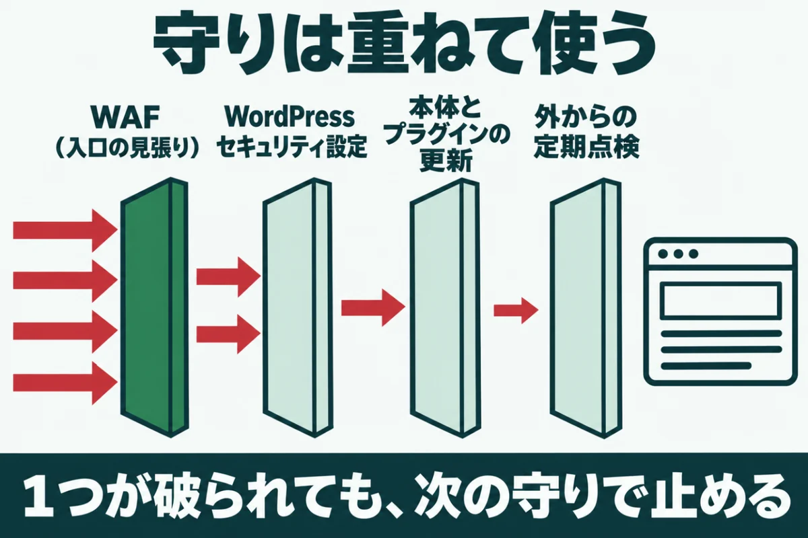

エックスサーバーのWAF設定のやり方と注意点6つの項目と誤検知の直し方

「エックスサーバーのWAFはオンにしたほうがいいの？オンにしてサイトが動かなくなったらどうしよう」と迷っていませんか？
WAFは、サーバーの入口で怪しいアクセスを止める仕組みです。エックスサーバーでは無料で使え、画面で項目を選ぶだけで設定できます。
この記事では、エックスサーバーのWAF設定のやり方と、オンにしたあとの注意点をまとめました。6つの項目の意味から、保存や送信が止まったときの直し方まで紹介します。
運営者が実際にサイトでWAFをオンにしたときの確かめ方も入れました。作業の前に一度通して読んでおくと安心です。
エックスサーバーのWAF設定とは

エックスサーバーのWAF設定は、サイトの弱点をねらう攻撃をサーバーの入口で止める機能です。WAFは「ウェブ・アプリケーション・ファイアウォール」を略した呼び名になります。
WordPressのようなプログラムを、外からの攻撃から守る仕組みです。届いたアクセスの中身を見て、攻撃によく使われる文字列があれば止めます。追加の料金はかからず、全プランで使えるのも助かる点です。まずは、できることと限界を押さえておきましょう。
WAFが止めるアクセス
WAFが見ているのは、サイトに届くアクセスの中身です。フォームの入力欄やURLの末尾に、スクリプトや命令文がまぎれ込んでいないかを調べます。
当てはまるアクセスは、サイトのプログラムに届く前に止められるのです。止めたアクセスには、エラーの画面が返ります。弱点が残っていても、攻撃が届きにくくなるのが利点でしょう。ふつうに記事を読むだけの訪問者には、影響がありません。訪問者が何かを設定する必要もないので、運営者の側だけで導入を決められます。
全プランで無料で使える
エックスサーバーのWAF設定は、2018年7月に全プランの標準機能として始まりました。エックスサーバービジネスでも同じように使えます。
サーバーパネルの「セキュリティ」の欄にある「WAF設定」から、ドメインごとに設定してください。守りたい項目だけを選んで組み合わせられるのも特長です。サイトの作りに合わせて調整しましょう。申し込みの手続きはいらず、思い立ったその日に始められます。料金が増える心配もないので、まだオフのサイトがあれば先に見直してください。
WAFだけでは守りきれない
エックスサーバーは、WAFが防御を保証するものではないと案内しています。プログラムの弱点は、プログラムの更新で直すのが基本です。
WAFは決まった型の攻撃を止めるもので、型に当てはまらない攻撃はすり抜けます。盗まれたパスワードでの正規のログインも止められません。WordPressの本体とプラグインの更新、パスワードの管理と重ねて使ってください。WAFは、ほかの対策が間に合わないあいだの時間をかせぐ守りです。そう考えておくと、役割を取り違えずに済むでしょう。
エックスサーバーのWAF設定で選べる6つの項目

エックスサーバーのWAF設定には、6つの項目があります。項目ごとに、止める攻撃の種類と、守る対象のプログラムが分かれているのです。
WordPressのサイトなら、基本は6つともオンにして様子を見るとよいでしょう。それぞれの意味を知っておくと、何かが止まったときに原因の見当がつけやすくなります。項目の名前は、エックスサーバーのマニュアルの表記に合わせました。
① XSS対策
XSS対策は、JavaScriptなどのスクリプトのタグが埋め込まれたアクセスを止める項目です。クロスサイトスクリプティングと呼ばれる攻撃への備えになります。
この攻撃を受けると、訪問者のログイン状態を盗まれることがあるのです。偽のサイトへ誘導される被害も起こります。掲示板やコメント欄のある作りでは特に大切な項目でしょう。入力された内容をそのまま画面に出すプログラムが、主にねらわれます。広告のタグを貼るときに止まりやすいのも、この項目です。
② SQL対策
SQL対策は、データベースへの命令文に当たる文字列が入ったアクセスを止めます。SQLインジェクションと呼ばれる攻撃への備えです。
入力欄に命令文を送り込まれると、データベースの中身を抜き取られるおそれがあります。書き換えや破壊につながることもあるのです。会員の情報を持つサイトほど被害が大きくなる攻撃と言えます。WordPressも記事や設定をデータベースに入れているため、オンにしておきましょう。お問い合わせの内容を保存するプラグインを使っている場合も、同じく守りの対象です。
③ ファイル対策
ファイル対策は、サーバーの設定ファイルの名前が入ったアクセスを止める項目です。.htaccessや.htpasswdといったファイルが対象になります。
これらを書き換えられると、パスワードで守ったページに入られるおそれがあるのです。サイトの動きを乗っ取られることもあります。画像を送れる掲示板やファイルを扱う機能が主な標的でしょう。ふだんの更新作業でこの名前を送ることはまれなので、止まる心配はあまりありません。迷ったら、オンのままにしておいてください。
④ メール対策
メール対策は、宛先やCCといったメールの見出しに関わる文字列が入ったアクセスを止めます。お問い合わせフォームを使った迷惑メールの大量送信への備えです。
フォームを踏み台にされると、知らない相手に大量のメールが送られます。自分のサーバーが迷惑メールの送り主にされるおそれがあるのです。そうなると、ふつうのメールまで届きにくくなりかねません。メールを送る機能を持つサイトなら、オンにしたうえでフォームの送信を必ず試してください。
⑤ コマンド対策
コマンド対策は、サーバーへの命令に使う言葉が入ったアクセスを止める項目です。kill、ping、lsといった命令の名前が対象になります。
プログラムを通じて命令を実行されると、サーバーの情報をのぞかれるおそれがあるのです。ほかのサイトを攻撃する踏み台にされる例もあります。命令を実行する機能を持つプログラムが標的です。ふつうの文章でも英単語として出ることがあり、まれに誤って止める原因になります。止まったときに疑う候補として覚えておきましょう。
⑥ PHP対策
PHP対策は、PHPの関数のうち、弱点につながりやすいものを使ったアクセスを止めます。ログイン状態の管理やファイルの操作に関わる関数が対象です。
悪用されると、管理者の権限を乗っ取られるおそれがあります。不正なファイルを置かれて、サーバーごと奪われることもあるのです。WordPressを含むPHPのプログラム全般を守る項目なので、外さないでおきましょう。PHPのコードを管理画面から保存すると、止まることがあります。止まったときは、この項目を一時的に外して試すのが近道です。
エックスサーバーでWAFを設定するやり方

エックスサーバーでWAFを設定するやり方は、3つの段階に分かれます。控えを取る、項目をオンにする、反映を待って動きを確かめる、の順です。
画面の操作は数分で終わりますが、オンにしたあとの確かめを省かないことが大切になります。運営者がサイトでWAFをオンにしたときも、同じ順で進めました。急ぎの更新作業がない日を選ぶと、落ち着いて試せます。
設定の前に控えを取る
WAFの設定はいつでも元に戻せるため、サイトのファイルが消える作業ではありません。ただ、ほかの対策とまとめて進めるなら、先にバックアップを取っておくと安心です。
あわせて、今のWAFの状態を画面で控えておきましょう。どの項目がもともとオンだったかが分かれば、戻すときに迷いません。お問い合わせフォームや会員登録など、あとで試す機能も書き出しておきます。試す順番まで決めておけば、確かめ漏れを防げるでしょう。自分のメールアドレスで受け取れるフォームを1つ選んでおくと、送信の確認が楽です。
サーバーパネルで項目をオンにする
サーバーパネルにログインし、「セキュリティ」の欄の「WAF設定」を開きます。最初に「設定前に必ずお読みください」という注意が出るので、目を通して閉じてください。
画面には、ドメインごとに6つの項目とオンとオフのスイッチが並んでいます。ドメインが多いときは、右上の「ドメインを絞り込む」で選ぶと探しやすいでしょう。オフの項目のスイッチを1つずつオンに切り替えてください。ドメインごとの設定なので、サイトの数だけ繰り返します。どのドメインまで済ませたかを控えに書き込むと、抜けを防げるのです。
反映を待って動きを確かめる
設定はすぐには効かず、反映まで時間がかかります。マニュアルの案内では、新しいサーバーパネルで最大30分ほどです。
旧パネルでは、最大1時間ほどかかると書かれています。反映したら、お問い合わせフォームから試しに1通送り、届くかを見てください。管理画面で記事や設定を保存できるかも試します。運営者が対応したサイトでも、反映を待ってからフォームの送信と保存を試しました。どちらも問題なく通ったことを確かめて、作業を終えています。
エックスサーバーのWAF設定で気をつけたいこと

エックスサーバーのWAF設定で気をつけたいのは、正しい操作まで止めてしまう誤検知です。設定画面の注意書きにも、サイトの動きに影響が出ることがあると書かれています。攻撃と似た文字列を、ふつうの作業で送ることがあるためで、防ぎきることはできません。
誤検知は珍しいことではなく、どのサーバーのWAFでも起こりえます。WAFを全部オフにしたまま放置しないことが何より大切です。止まった作業だけを、短い時間で通す工夫をしましょう。
保存や送信が止まる誤検知
止まりやすいのは、スクリプトのタグやPHPのコードを管理画面から保存する作業です。広告や計測のタグを貼る設定、テーマのファイルの編集などが当てはまります。
止まると、保存ボタンを押したところでエラーの画面が出るのです。攻撃と同じ形の文字列を送っているために起こります。運営者もほかのサーバーで、計測のタグを含む設定の保存がWAFで止まった経験をしました。サイトが壊れたわけではないので、慌てずに切り分けてください。
項目を1つずつオフにして切り分ける
止まったときは、全部をオフにする前に、関係しそうな項目から1つずつ外して試します。タグならXSS対策、PHPのコードならPHP対策が、まず疑う候補です。
外すたびに反映を待ち、同じ操作をもう一度試してください。原因の項目が分かれば、残りはオンのまま守れます。どうしても通らないときは、サーバーのファイルマネージャで直接ファイルを直す方法もあるでしょう。反映を待つ時間がかかるので、作業に余裕のある時間帯に進めるのがおすすめです。
作業が終わったらオンに戻す
一時的にオフにした項目は、作業が終わったらすぐにオンへ戻します。戻し忘れると、守りの穴が開いたままになってしまうのです。
オフにした日時と項目をメモに残しておくと、戻し忘れを防げます。何度も同じ作業で止まるなら、その作業のときだけ外す運用に決めておきましょう。反映には時間がかかるので、戻したあとも念のため画面で状態を確かめてください。オンに戻したら、止まっていた作業がもう一度止まらないかも見ておくと安心です。
エックスサーバーのWAF設定とあわせて見直したい守り

エックスサーバーのWAF設定をオンにしたら、ほかの守りもあわせて見直しましょう。WAFは入口の見張りで、弱点そのものは消えないからです。
エックスサーバーには、WordPress向けのセキュリティ設定も用意されています。いくつもの守りを重ねると、1つが破られても被害を抑えやすいのです。順番に確かめていきましょう。
WordPressセキュリティ設定を確かめる
サーバーパネルの「WordPressセキュリティ設定」では、ログインの試行回数を制限できます。国外からのアクセス制限も選べ、こちらは初期状態でオンです。
一方、管理画面に入れる場所を絞る「IPアドレス制限」は初期状態でオフになっています。固定の回線から作業するなら、オンにすると効果的です。不正ログインへの備えは、次の記事にまとめました。
WordPressの管理画面に不正ログインされたときの対処｜すぐやる3つと再発防止
本体とプラグインを最新に保つ
WAFが止められない攻撃に備えるには、弱点そのものを直すしかありません。WordPressの本体、テーマ、プラグインを最新の版に保ちましょう。
サーバーのPHPも、修正が届く版で動かしておく必要があります。古い版のままでは、WAFの外から入られるおそれがあるのです。使っていないプラグインは、更新を待つより消してしまうほうが確実でしょう。PHPの上げ方は、エックスサーバーでPHPのバージョンを上げる手順と事前チェックで紹介しました。
外から弱点を確かめる
設定を整えたら、外から見て弱点が残っていないかを確かめます。ログイン名が見えていないか、古いプログラムが残っていないかが目安です。
自分では気づきにくいところなので、定期的に外から点検する習慣をつけておきましょう。点検の結果は、次に何を直すかを決める材料にもなります。WAFをオンにした日と点検の日をそろえて記録しておくと、効果を振り返りやすくなるのです。点検の選び方は、ホームページのセキュリティ診断とは？無料と有料の違いと選び方で解説しています。
URLを入れるだけで、古いプログラムやログイン名の丸見えなど8項目を無料で判定します。登録はいりません。
無料で診断するエックスサーバーのWAF設定に関するよくある質問
エックスサーバーのWAFは、最初からオンになっていますか？
サイトによって状態が違うため、サーバーパネルの「WAF設定」で確かめてください。ドメインごとに、項目ごとのオンとオフが表示されます。
運営者のサーバーでも、最初からあるドメインは6つともオフのままでした。前の制作会社や担当者がオフにしたまま、ということもあるのです。引き継いだサイトは、一度画面で状態を見ておくと安心できます。オフの項目があれば、その理由を前の担当者に聞いておきましょう。
WAFをオンにすると、サイトの表示は遅くなりますか？
WAFはアクセスの中身を調べる仕組みです。運営者の作業では、ふつうの閲覧で体感できるほど遅くなった例は見ていません。
表示の速さよりも、表示の崩れやエラーが出ないかを先に確かめてください。気になる場合は、オンにする前とあとで同じページの表示の速さを測って比べてみましょう。数字で比べれば、思い込みで判断せずに済みます。
WAFで止められたアクセスは、どうなりますか？
止められたアクセスはサイトのプログラムに届かず、エラーの画面が返ります。そのアクセスでは、サイトのプログラムは動きません。
自分の操作が止められたときも、同じようにエラーの画面が出るのです。保存や送信のあとに急にエラーが出たら、WAFの誤検知を疑ってください。直前に貼った文字列があれば、それが手がかりになります。
WAFをオンにすれば、セキュリティのプラグインはいりませんか？
WAFとプラグインは、守る場所が違います。WAFはサーバーの入口で攻撃の型を見る仕組みです。
プラグインはWordPressの中で、ログインや変更を見張ります。ログインの通知や二段階認証などは、WAFでは代わりになりません。役割を分けて、足りないところを補う形で選ぶとよいでしょう。入れすぎると管理画面が重くなるため、目的を決めて選んでください。
エックスサーバー以外のサーバーにも、WAFはありますか？
多くのレンタルサーバーが、同じような機能を用意しています。ただ、名前や項目の分け方、反映までの時間はサーバーごとに違うのです。
使っているサーバーのマニュアルで、場所と設定の方法を確かめてください。誤検知のときに項目を1つずつ外して切り分ける考え方は、どのサーバーでも使えます。反映までの時間も、あわせて確かめておきましょう。
まとめ
エックスサーバーのWAF設定は、サーバーパネルから無料で使える入口の守りです。WordPressのサイトなら、6つの項目をオンにして様子を見るのが基本になります。
オンにしたら、反映を待ってフォームの送信と管理画面の保存を試しましょう。止まったときは項目を1つずつ外して原因を探し、作業が終わったらオンに戻してください。
WAFだけに頼らず、本体とプラグインの更新や外からの点検と重ねて、サイトを守りましょう。
まずは、今の状態を知るところから。
URLを入れるだけで、数十秒で判定が出ます。登録はいりません。